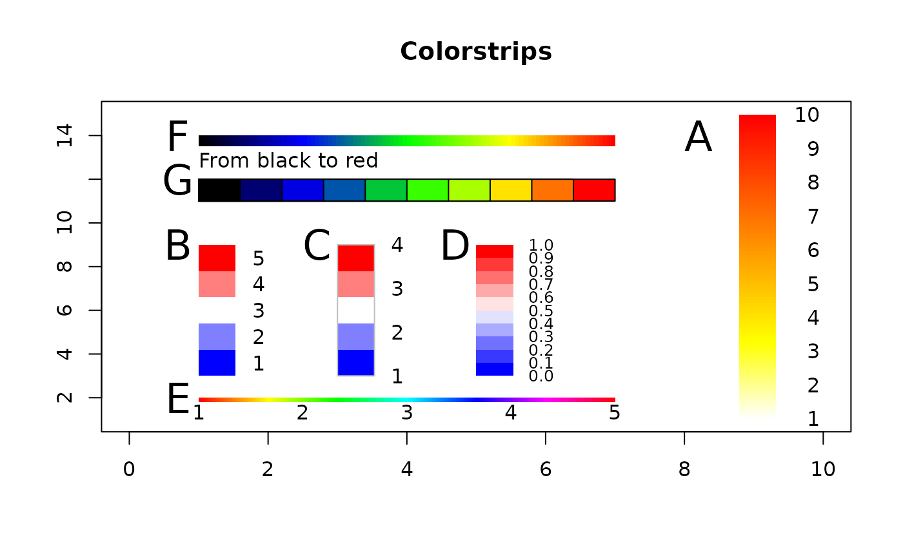

ColorLegend.RdAdd a color legend, an image of a sequence of colors, to a plot.
ColorLegend(x, y = NULL, cols = rev(heat.colors(100)), labels = NULL,
width = NULL, height = NULL, horiz = FALSE, xjust = 0, yjust = 1,
inset = 0, border = NA, frame = NA, cntrlbl = FALSE,
adj = ifelse(horiz, c(0.5, 1), c(1, 0.5)), cex = 1,
title = NULL, title.adj = 0.5, ...)the left x-coordinate to be used to position the colorlegend. See 'Details'.
the top y-coordinate to be used to position the colorlegend. See 'Details'.
the color appearing in the colorlegend.
a vector of labels to be placed at the right side of the colorlegend.
the width of the colorlegend.
the height of the colorlegend.
logical indicating if the colorlegend should be horizontal; default FALSE means vertical alignment.
how the colorlegend is to be justified relative to the colorlegend x location. A value of 0 means left justified, 0.5 means centered and 1 means right justified.
the same as xjust for the legend y location.
inset distance(s) from the margins as a fraction of the plot region when colorlegend is placed by keyword.
defines the bordor color of each rectangle. Default is none (NA).
defines the bordor color of the frame around the whole colorlegend. Default is none (NA).
defines, whether the labels should be printed in the middle of the color blocks or
start at the edges of the colorlegend. Default is FALSE, which will print the extreme labels centered on the edges.
text alignment, horizontal and vertical.
character extension for the labels, default 1.0.
a character string or length-one expression giving a title to be placed at the top of the legend.
horizontal adjustment for title: see the help for par("adj").
further arguments are passed to the function text.
The labels are placed at the right side of the colorlegend and are reparted uniformly between y and y - height.
The location may also be specified by setting x to a single keyword from the list "bottomright", "bottom", "bottomleft", "left", "topleft", "top", "topright", "right" and "center". This places the colorlegend on the inside of the plot frame at the given location. Partial argument matching is used. The optional inset argument specifies how far the colorlegend is inset from the plot margins. If a single value is given, it is used for both margins; if two values are given, the first is used for x- distance, the second for y-distance.
plot(1:15,, xlim=c(0,10), type="n", xlab="", ylab="", main="Colorstrips")
# A
ColorLegend(x="right", inset=0.1, labels=c(1:10))
# B: Center the labels
ColorLegend(x=1, y=9, height=6, col=colorRampPalette(c("blue", "white", "red"),
space = "rgb")(5), labels=1:5, cntrlbl = TRUE)
# C: Outer frame
ColorLegend(x=3, y=9, height=6, col=colorRampPalette(c("blue", "white", "red"),
space = "rgb")(5), labels=1:4, frame="grey")
# D
ColorLegend(x=5, y=9, height=6, col=colorRampPalette(c("blue", "white", "red"),
space = "rgb")(10), labels=sprintf("%.1f",seq(0,1,0.1)), cex=0.8)
# E: horizontal shape
ColorLegend(x=1, y=2, width=6, height=0.2, col=rainbow(500), labels=1:5,horiz=TRUE)
# F
ColorLegend(x=1, y=14, width=6, height=0.5, col=colorRampPalette(
c("black","blue","green","yellow","red"), space = "rgb")(100), horiz=TRUE)
# G
ColorLegend(x=1, y=12, width=6, height=1, col=colorRampPalette(c("black","blue",
"green","yellow","red"), space = "rgb")(10), horiz=TRUE,
border="black", title="From black to red", title.adj=0)
text(x = c(8,0.5,2.5,4.5,0.5,0.5,0.5)+.2, y=c(14,9,9,9,2,14,12), LETTERS[1:7], cex=2)
